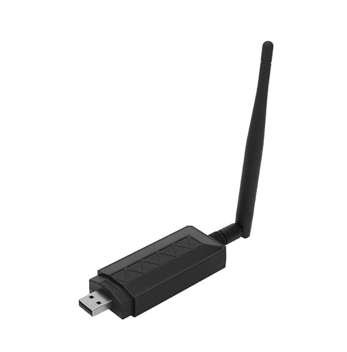

TP-Link TL-WN722N v1 Kali Linux Wi-Fi Adapter
Monitor Mode & Packet Injection | Atheros AR9271
The TP-Link TL-WN722N v1 is a USB Wi-Fi adapter designed for Kali Linux penetration testing and wireless security auditing. It uses the Atheros AR9271 chipset, offering full monitor mode and packet injection support.
Important: This is the original Version 1 (AR9271).
Versions v2 & v3 do not support monitor mode or packet injection.
Price: Ksh 3,800
Negotiable • Nationwide delivery availableS
Negotiable • Nationwide delivery availableS
Key Features
- Native Kali Linux support
- Monitor mode enabled
- Packet injection supported
- High-gain detachable antenna
- 150Mbps 802.11n (2.4GHz)
- USB plug-and-play
Delivery Information
📍 Nairobi same-day delivery available.
🚚 Nationwide delivery across Kenya via courier services.
Product Images



Customer Reviews
⭐⭐⭐⭐⭐
Brian K. – IT Student (Nairobi)
Reviewed on 5 January 2026
“Confirmed original WN722N v1. Monitor mode works perfectly on Kali Linux. No driver issues at all.”
Brian K. – IT Student (Nairobi)
Reviewed on 5 January 2026
“Confirmed original WN722N v1. Monitor mode works perfectly on Kali Linux. No driver issues at all.”
⭐⭐⭐⭐⭐
Alex M. – Network Technician (Thika)
Reviewed on 28 December 2025
“Exactly what I needed for Wi-Fi auditing. Packet injection works fine. Seller was honest about the version.”
Alex M. – Network Technician (Thika)
Reviewed on 28 December 2025
“Exactly what I needed for Wi-Fi auditing. Packet injection works fine. Seller was honest about the version.”
⭐⭐⭐⭐⭐
Kevin O. – Cybersecurity Enthusiast (Kisumu)
Reviewed on 18 December 2025
“Tested on Kali and Parrot OS. Works out of the box. Very rare to find v1 nowadays.”
Kevin O. – Cybersecurity Enthusiast (Kisumu)
Reviewed on 18 December 2025
“Tested on Kali and Parrot OS. Works out of the box. Very rare to find v1 nowadays.”
⭐⭐⭐⭐⭐
James W. – Computer Science Student (Nakuru)
Reviewed on 10 December 2025
“Genuine AR9271 chipset. Plug and play. Highly recommended for ethical hacking.”
James W. – Computer Science Student (Nakuru)
Reviewed on 10 December 2025
“Genuine AR9271 chipset. Plug and play. Highly recommended for ethical hacking.”
⭐⭐⭐⭐⭐
Daniel T. – Freelance Pentester (Mombasa)
Reviewed on 2 December 2025
“Monitor mode and injection confirmed. Good signal strength with the external antenna.”
Daniel T. – Freelance Pentester (Mombasa)
Reviewed on 2 December 2025
“Monitor mode and injection confirmed. Good signal strength with the external antenna.”
⭐⭐⭐⭐⭐
Eric N. – Linux User (Eldoret)
Reviewed on 25 November 2025
“Works exactly as described. Kali recognized it instantly. Worth the price.”
Eric N. – Linux User (Eldoret)
Reviewed on 25 November 2025
“Works exactly as described. Kali recognized it instantly. Worth the price.”
Frequently Asked Questions
Q: Does this work on Kali Linux out of the box?
Yes. The WN722N v1 uses the AR9271 chipset with native Kali Linux support.
Q: Does it support monitor mode and packet injection?
Yes, fully supported.
Q: Is this version 1?
Yes. Verified original Version 1 (AR9271).
📞 Call or WhatsApp
+254 715 010 539
© Nickson Njenga. All Rights Reserved.